Soluções para os problemas propostos pelo professor Agostinho Brito Jr na disciplina Processamento Digital de Imagens semestre 2016.1
Nesse programa o usuário entrará com as coordenadas x e y de dois pontos P1 e P2 e o algoritmo fará a modificação para o negativo da imagem na área que está entre esses pontos. Para modificar parte da imagem para seu negativo fiz para cada pixel selecionado o calculo (255-valorRGB)
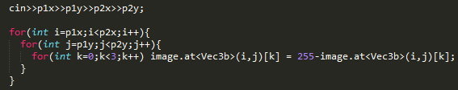 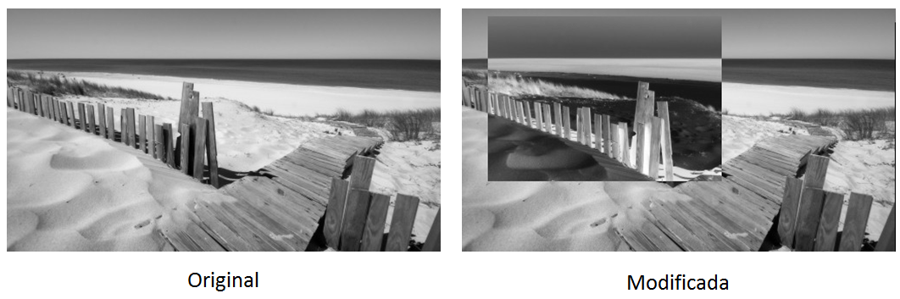O objetivo desse código é trocar partições da imagem de um lugar para outro na imagem. Assim particionei a imagem original em 4 regiões que foram guardadas nas matrizes A,B,C,D. Em seguida instanciei uma matriz de saida out e a preenchi com as matrizes anteriormente citadas, numa ordem que fizesse a imagem de saida estar com as regiões invertidas se comparada com a imagem original.
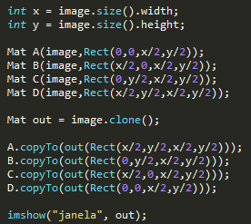
Foi pedido uma solução para o problema de existir mais de 255 objetos na cena. Isso gera problema pois a imagem que temos em tom de cinza varia seus niveis de 0 á 255. Como o floodfill está marcando uma dada região com o contador de objetos esse valor no caso iria ultrapassar 255. A solução que achei foi usar a função min() da biblioteca math.h retornando como valor máximo para o floodfill o valor 255.
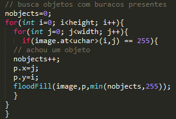 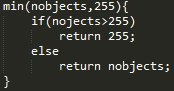Função min()
Para fazer a equalização utilizei a função equalizeHist(src,dest) do opencv. Por se tratar de video foram feitas equalizações para as três matrizes de cor. Não foi necessário alocar espaço extra para guardar a matriz equalizada, pois do modo que foi utlizado a matriz de cor original é sobrescrita pela modificada. Para fins de exemplificação foi escrito um programa que equalizava apenas uma imagem utilizando a mesma função. O resultado é apresentado abaixo.
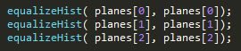 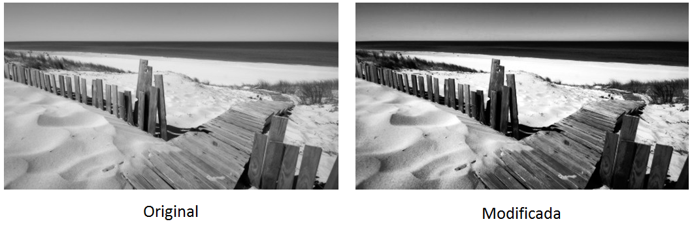Nesse exercicio foi pedido uma comparação entre histogramas. O histograma de uma componente de cor só seria calculado continuamente e comparado com o ultimo histograma calculado. Caso a diferença ultrapasse certo limiar se ativaria um alarme. No código a matriz de cor escolhida foi a R. O histOldR guarda a matriz R obtida na iteração anterior e o histR guarda a matriz R atual. Para comparar foi utilizada a função compareHist() do opencv usando o método da correlação. Essa função retorna valores entre 0 e 1, e para tal implementação utilizado um limiar de 0,95. Caso esse limiar seja alcançado três vezes é impresso um texto na tela através da função putText() escrito ALARME
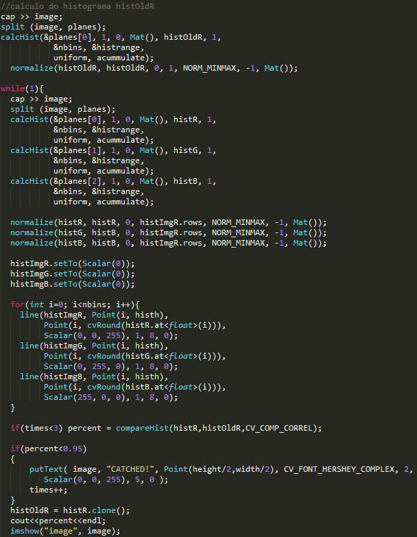 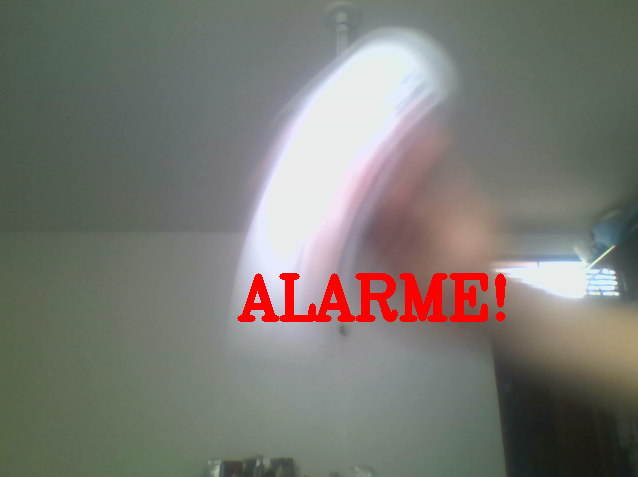Nesse exercicio foi pedido para fazer um filtro que calculasse o laplaciano do gaussiano das imagens capturadas. Assim adicionei ao switch case um código que primeiro executa o filtro gaussiano e no resultado obtido executa o laplaciano.
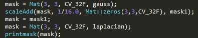 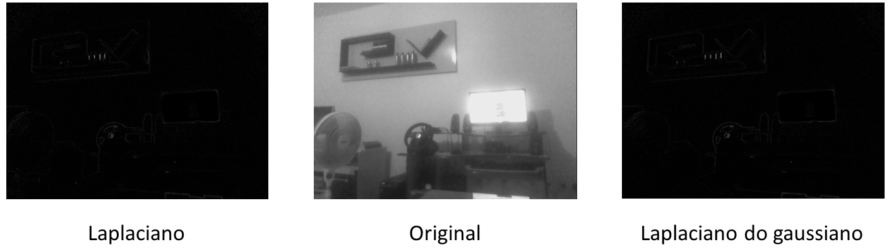